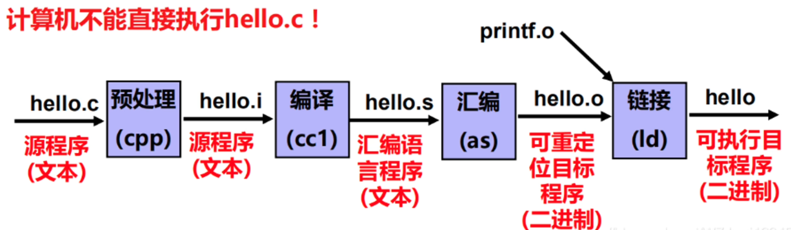

Reverse Engineer
快捷操作
IDA Pro快捷键
- IDA自动识别main函数，按F12，会自动绘制更加专业和详细的函数流程图。
- IDA图形显示界面，用鼠标选中程序分支点，按Space（空格）键，可切换到汇编指令界面。
OllyDbg快捷键
OllyDbg默认将程序中断在PE装载器开始处，而非main函数开始处。 - F8单步跟踪 - F7单步跟入 - Ctrl+G 可指定直接跳转到指定VA - F2下断点 - F9运行程序 - Ctrl+F2重新运行
hello.c到可执行文件的hello的过程
hello.c -> 预处理 hello.i -> 编译 hello.s -> 汇编 hello.o -> 链接 -> hello(binary excutable file)
要详细了解看CSAPP
如下图所示： 
简单操作
lunc.c
#include <stdio.h>
int main() {
int p = 5;
printf("%p\n", &p);
return 0;
}
通过.c输出.s
1.看编译后的汇编代码:
gcc -S -o luna.s luna.c
cat luna.s
输出：
.section __TEXT,__text,regular,pure_instructions
.build_version macos, 15, 0 sdk_version 15, 2
.globl _main ; -- Begin function main
.p2align 2
_main: ; @main
.cfi_startproc
; %bb.0:
sub sp, sp, #48
stp x29, x30, [sp, #32] ; 16-byte Folded Spill
add x29, sp, #32
.cfi_def_cfa w29, 16
.cfi_offset w30, -8
.cfi_offset w29, -16
mov w8, #0 ; =0x0
stur w8, [x29, #-12] ; 4-byte Folded Spill
stur wzr, [x29, #-4]
sub x8, x29, #8
mov w9, #5 ; =0x5
stur w9, [x29, #-8]
mov x9, sp
str x8, [x9]
adrp x0, l_.str@PAGE
add x0, x0, l_.str@PAGEOFF
bl _printf
ldur w0, [x29, #-12] ; 4-byte Folded Reload
ldp x29, x30, [sp, #32] ; 16-byte Folded Reload
add sp, sp, #48
ret
.cfi_endproc
; -- End function
.section __TEXT,__cstring,cstring_literals
l_.str: ; @.str
.asciz "%p\n"
.subsections_via_symbols
2.看汇编后的文件
gcc -c -o luna.o luna.c
objdump -s luna.o
输出：.o文件中是机器码（全是0和1）
luna.o: file format mach-o arm64
Contents of section __TEXT,__text:
0000 ffc300d1 fd7b02a9 fd830091 08008052 .....{.........R
0010 a8431fb8 bfc31fb8 a82300d1 a9008052 .C.......#.....R
0020 a9831fb8 e9030091 280100f9 00000090 ........(.......
0030 00000091 00000094 a0435fb8 fd7b42a9 .........C_..{B.
0040 ffc30091 c0035fd6 ......_.
Contents of section __TEXT,__cstring:
0048 25700a00 %p..
Contents of section __LD,__compact_unwind:
0050 00000000 00000000 48000000 00000004 ........H.......
0060 00000000 00000000 00000000 00000000 ................
3.链接
gcc -o luna luna.o -lm
./luna
常用工具
objdump
使用说明
objdump --help
打印基本信息
objdump -f ./luna
./luna: file format mach-o arm64
打印可执行文件的基本汇编
objdump -d luna2 > luna2.o
cat luna2.o
luna2: file format mach-o arm64
Disassembly of section __TEXT,__text:
0000000100003f50 <_main>:
100003f50: d100c3ff sub sp, sp, #0x30
100003f54: a9027bfd stp x29, x30, [sp, #0x20]
...
Disassembly of section __TEXT,__stubs:
0000000100003f98 <__stubs>:
100003f98: b0000010 adrp x16, 0x100004000 <_printf+0x100004000>
100003f9c: f9400210 ldr x16, [x16]
100003fa0: d61f0200 br x16
打印可执行文件的汇编代码
luna为可执行文件名称
objdump -h luna
-h 表示显示文件的段头信息。段头信息包括文件中的各个段（section）的名称、大小、起始地址等。
luna: file format mach-o arm64
Sections:
Idx Name Size VMA Type
0 __text 00000048 0000000100003f50 TEXT
1 __stubs 0000000c 0000000100003f98 TEXT
2 __cstring 00000004 0000000100003fa4 DATA
3 __unwind_info 00000058 0000000100003fa8 DATA
4 __got 00000008 0000000100004000 DATA
ELF Analysis Tool
- checksec: https://github.com/slimm609/checksec
- readelf
- strings
- objdump
GDB
linux下一把是gdb，但macos下一般是用lldb。
b main # break main,到main函数下断点
r # 运行程序
i r # 打印所有寄存器（register） lldb没有
disas # disassemble
gdb现实优化可以用 gef （github.com搜）
其他工具： - IDA Pro:强大但是收费 - Ghidra：可以免费用
REF
- 逆向工程快速入门 -- 还不错，内容不算太深也不算太浅。5:46正片开始
- CMU的CSAPP课程
- https://0xinfection.github.io/reversing/
- https://ctf-wiki.org/en/
- 逆向入门推荐：Rootkit Arsenal: Escape and Evasion in the Dark Corners of the System这本书，国内译名是rootkit:系统灰色地带的隐匿者，自己就说因为这本书跌入了windows内核还有驱动开发的大坑里